Mixed-effects models are powerful tools for analysing linguistic data
because they allow us to examine systematic patterns while still
accounting for the messy variability that naturally comes from speakers
and words. Unlike the simpler statistical tests you may have encountered
before, mixed-effects models do not assume that every data point is
fully independent. Instead, they let us model both the fixed effects—the
predictors we are directly interested in testing—and the random
effects—sources of variation such as speakers or lexical items that we
want to control for rather than treat as “noise”. By combining these two
dimensions, mixed-effects models give us a way to look for generalizable
trends in language behaviour while still respecting the structure of our
data.
These models have become the standard in linguistic publications,
often replacing traditional ANOVAs or t-tests. Reviewers and editors now
frequently expect results to be framed through mixed-effects modelling.
Learning how these models work will therefore not only help us
understand how patterns in language emerge but also prepare you to read,
evaluate, and eventually produce research that meets the expectations of
the field.
We’ll be working with the following libraries:
library(readr)
library(readxl)
library(ggplot2)
library(gridExtra)
library(lme4)
library(dplyr)
library(tidyverse)Download Spanish_VOT.xlsx
Load the dataset:
library(readxl)
vot <- read_excel("C:/Users/mikey/Dropbox/website/GitHub/LING804/Lmems/Spanish_VOT.xlsx")
View(vot)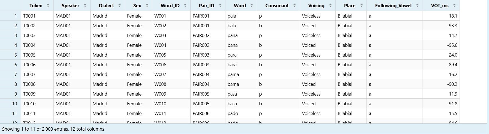
Before fitting a statistical model, we first need to understand the structure of our dataset. This means identifying what each row represents, what variables are available, how those variables are coded, and whether the data contain any obvious problems such as missing values. We also need to identify which observations are related to one another. This is especially important for mixed-effects models because repeated observations from the same speakers or words are not statistically independent.
For this example, we will use a dataset containing voice
onset time (VOT) measurements from speakers of two varieties of
Spanish: Madrid Spanish and Mexico City
Spanish. Each speaker produced a series of word-initial voiced
and voiceless stops. Our dependent variable is VOT_ms,
measured in milliseconds. Positive values indicate that voicing begins
after the release of the stop, while negative values indicate that
voicing begins before the release.
A good first step with any new dataset is simply to look at it.
head(vot)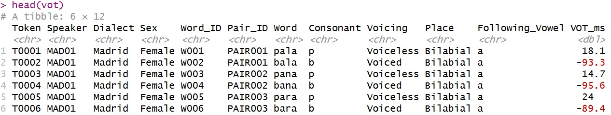
Each row represents one VOT measurement: one word produced by one speaker.
We can also look at the names of all of the variables in the dataset.
names(vot)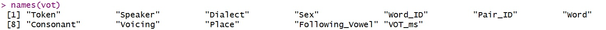
The dataset contains the following variables:
Token: a unique identifier for each observationSpeaker: the speaker who produced the wordDialect: Madrid or Mexico City SpanishSex: sex of the speakerWord_ID: a unique identifier for the lexical itemPair_ID: identifies matched voiced–voiceless word
pairsWord: the word that was producedConsonant: the initial consonant (/p, t, k, b, d,
g/)Voicing: voiced or voicelessPlace: bilabial, dental, or velarFollowing_Vowel: the vowel following the stopVOT_ms: voice onset time in millisecondsThe str() function gives us information about both the
observations and the way R has interpreted each variable.
str(vot)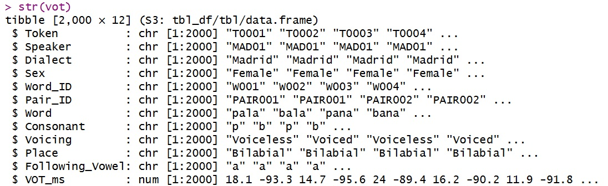
Pay particular attention to whether variables have been read as
numeric or categorical variables.
VOT_ms should be numeric, whereas variables such as
Speaker, Dialect, Voicing, and
Place represent categories.
We can also ask R how large the dataset is.
dim(vot)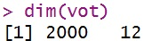
Or examine the number of rows and columns separately.
nrow(vot)
ncol(vot)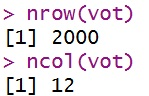
There are 2,000 observations in the dataset.
The summary() function provides a quick overview of
every variable.
summary(vot)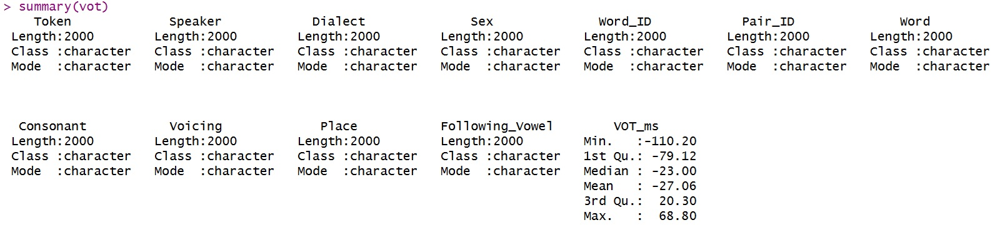
For numeric variables such as VOT_ms, R reports values
such as the minimum, maximum, median, and mean. For categorical
variables, the usefulness of summary() depends on how those
variables have been coded.
We can examine the VOT measurements separately.
summary(vot$VOT_ms)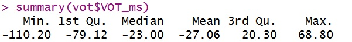
Notice that the dataset contains both negative and positive VOT values. This is expected. The Spanish voiced stops /b, d, g/ are frequently prevoiced in word-initial position and therefore have negative VOT, while the voiceless stops /p, t, k/ generally have positive short-lag VOT.
If VOT_ms is not numeric, run the following:
vot$VOT_ms=as.numeric(vot$VOT_ms)The table() function is useful for seeing how many
observations belong to each category.
table(vot$Dialect)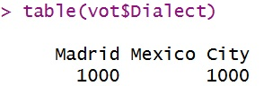
table(vot$Sex)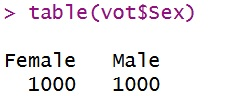
We can also examine combinations of variables.
For example, how are the individual consonants distributed across dialects?
table(vot$Dialect, vot$Consonant)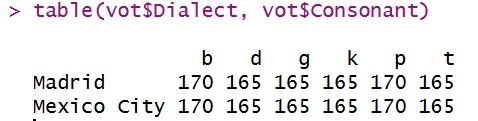
Or how are place of articulation and voicing related?
table(vot$Place, vot$Voicing)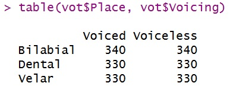
This second table is particularly important. Place and
Voicing are not simply different names for the same
information. Each place of articulation occurs with both a voiced and a
voiceless consonant:
This means that we can examine the effects of Voicing and Place separately, as well as ask whether the effect of place differs between voiced and voiceless stops.
Because we will eventually use Speaker as a random
effect, we need to understand its structure.
length(unique(vot$Speaker))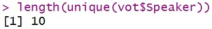
We can also see which speakers occur in the dataset.
unique(vot$Speaker)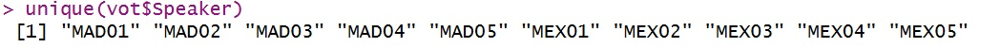
And determine how many observations each speaker contributes.
table(vot$Speaker)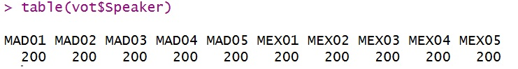
Each speaker contributes many observations. This is important because measurements from the same speaker are unlikely to be completely independent. Some speakers may systematically produce longer or shorter VOT values than others. Also, although each speaker has exactly 200, this is almost never the case with a real linguistics dataset.
We can also see how speakers are distributed across
dialect and sex.
table(vot$Dialect, vot$Sex)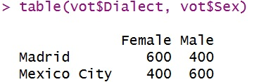
Words are also repeated across speakers.
length(unique(vot$Word_ID))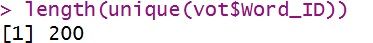
table(vot$Word_ID)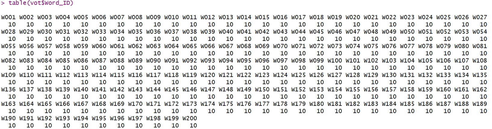
Each lexical item was produced by multiple speakers. This gives us
another source of non-independence: some words may systematically
produce slightly longer or shorter VOT values than others. Also, rarely
will you have a perfect dataset where each word is repeated
the same number of times every time.
Our dataset therefore has a crossed structure:
This will eventually motivate including both Speaker and
Word as random effects in our model.
Before doing any analysis, we should also determine whether any observations are missing.
sum(is.na(vot))To examine missing values separately for every variable:
colSums(is.na(vot))If these values are all zero, the dataset contains no missing observations.
Finally, we can start getting a very basic idea of how VOT differs across some of our major variables.
vot %>%
group_by(Voicing) %>% #group the unique instances in the Voicing category
summarise( #use `summarize` to create a summary table
Mean_VOT = mean(VOT_ms), #This uses the `mean` function to get the mean averages of the VOT durations in ms
SD_VOT = sd(VOT_ms), #This uses the `standard deviation` function to get the SDs of the VOT durations in ms
N = n() #the number of instances of each observation
)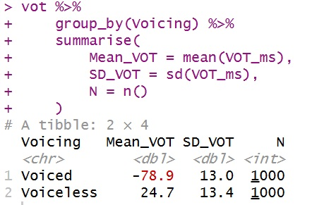
We can do the same thing for consonant.
vot %>%
group_by(Consonant) %>%
summarise(
Mean_VOT = mean(VOT_ms),
SD_VOT = sd(VOT_ms),
N = n()
)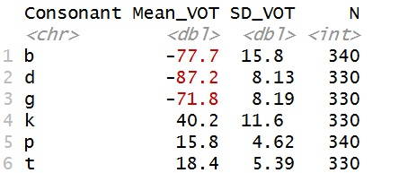
And for dialect and consonant together.
vot %>%
group_by(Dialect, Consonant) %>%
summarise(
Mean_VOT = mean(VOT_ms),
SD_VOT = sd(VOT_ms),
N = n()
)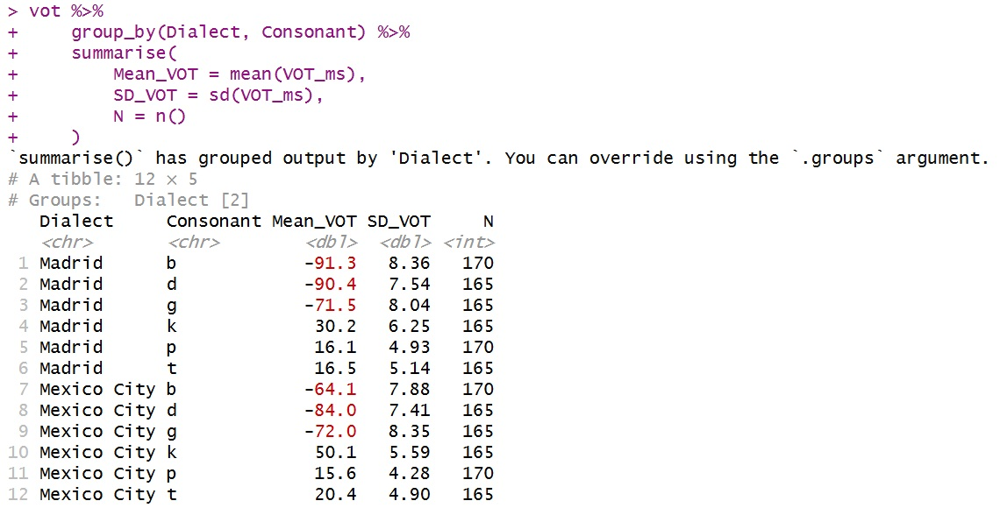
At this stage, we are not testing hypotheses. We are simply becoming familiar with the dataset. Before building a model, we want to know what observations we have, how they are grouped, how our variables are coded, and whether any obvious patterns or problems are present.
In the next section, we will explore these relationships visually.
We have now looked at the structure of the dataset and produced some basic numerical summaries. The next step is to visualize the dependent variable.
This is an important step before fitting a statistical model. A model will eventually give us coefficient estimates, standard errors, and p-values, but we should first have some idea of what the raw data actually look like visually.
Remember, however, that a graph is descriptive. Ideally, our hypotheses are motivated by our research questions, previous research, and what we know about the linguistic phenomenon. That does not mean that we cannot discover unexpected patterns while exploring the data. Exploratory or data-driven analysis is a legitimate and often valuable part of linguistic research, particularly when we are working with complex or poorly understood phenomena. The important distinction is that a hypothesis generated after inspecting the data should be described as exploratory rather than presented as though it had been predicted in advance. Ideally, an exploratory finding can later be tested using new data or an independent sample.
Let’s begin with Voicing.
ggplot(vot, aes(x = Voicing, y = VOT_ms, color=Voicing)) +
geom_boxplot() +
labs(
title = "VOT by voicing",
x = "Voicing",
y = "VOT (ms)"
)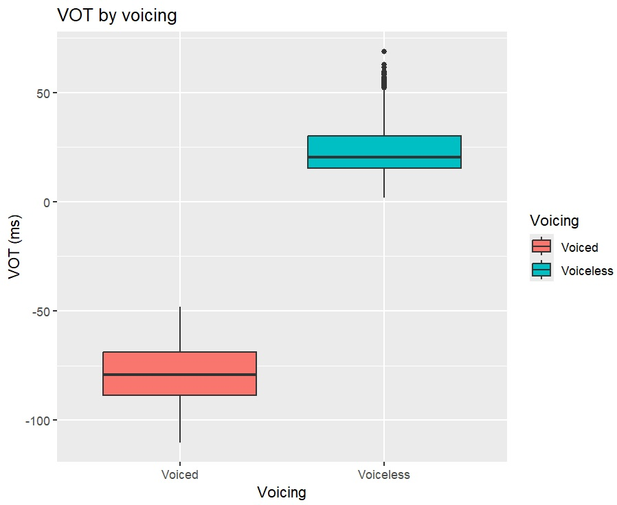
The boxplots show the distribution of VOT values for
voiced and voiceless stops.
We already know from the descriptive summaries that
voiced stops tend to have negative VOT values because they
are frequently prevoiced, while voiceless stops tend to
have positive VOT values. The graph lets us see the size of that
difference as well as the amount of variability within each
category.
Next, examine Place.
ggplot(vot, aes(x = Place, y = VOT_ms, fill=Voicing)) +
geom_boxplot() +
labs(
title = "VOT by place of articulation",
x = "Place of articulation",
y = "VOT (ms)"
)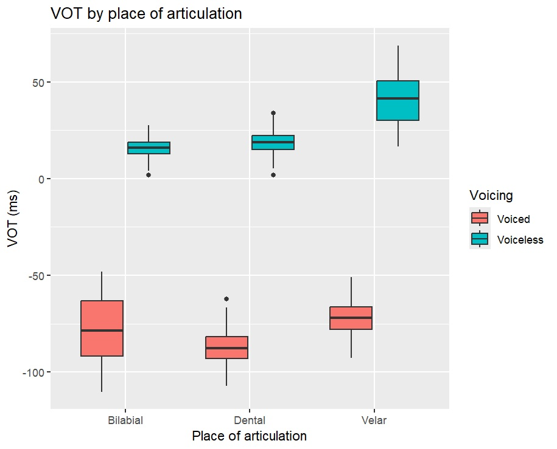
Place is a categorical predictor with three levels:
Bilabial
Dental
Velar
Later in this module, we will ask whether keeping all three levels is necessary or whether the place categories can be collapsed in theoretically meaningful ways.
Next, examine Dialect.
ggplot(vot, aes(x = Dialect, y = VOT_ms, fill=Voicing)) +
geom_boxplot() +
labs(
title = "VOT by dialect",
x = "Dialect",
y = "VOT (ms)"
)
ggplot(vot, aes(x = Dialect, y = VOT_ms, fill=Voicing, by=Place)) +
geom_boxplot() +
labs(
title = "VOT by dialect",
x = "Dialect",
y = "VOT (ms)"
)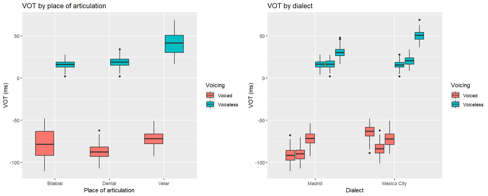
This allows us to inspect whether the two dialect groups appear to differ in their VOT distributions.
Remember that Dialect is a speaker-level predictor. Each
speaker belongs to only one dialect. Although the dataset contains 2,000
rows, we do not have 2,000 independent dialect
observations: we have measurements from 10 speakers. The repeated
measurements are one of the reasons we need a mixed-effects model.
Next, examine Sex.
ggplot(vot, aes(x = Sex, y = VOT_ms, by=Voicing, color=Voicing)) +
geom_boxplot() +
labs(
title = "VOT by sex",
x = "Sex",
y = "VOT (ms)"
)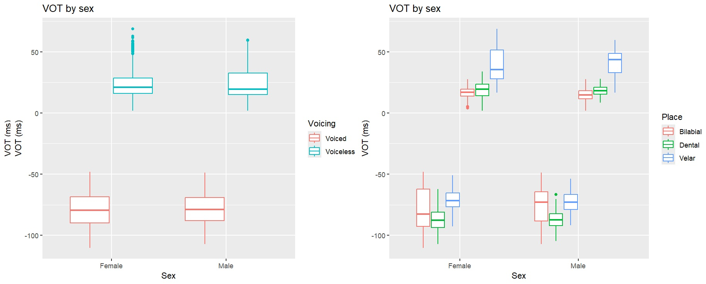
Sex is also a speaker-level predictor. Each speaker
contributes many observations, but each speaker has only one value for
Sex.
A weak-looking raw pattern does not automatically mean that a variable is irrelevant. Likewise, a strong-looking raw pattern does not prove that the variable has an independent effect. Other predictors may overlap with it.
Next, examine Following_Vowel.
ggplot(vot, aes(x = Following_Vowel, y = VOT_ms, by=Voicing, color=Voicing)) +
geom_boxplot() +
labs(
title = "VOT by following vowel",
x = "Following vowel",
y = "VOT (ms)"
)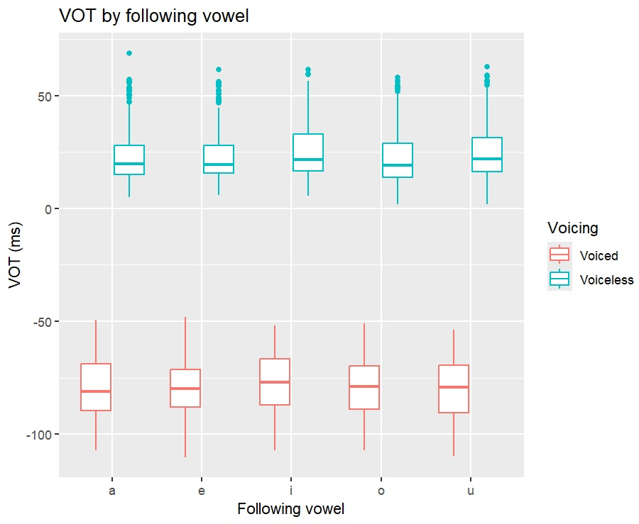
The following vowel is also a plausible predictor of VOT even if the effect looks small in this graph. Previous phonetic research has shown that VOT can vary according to vowel context, including vowel height and quality, and vowel context has also been reported to interact with other factors such as place of articulation (e.g., Nearey & Rochet, 1994; Rosner et al., 2000). We will therefore consider Following_Vowel as a potential predictor in our model.
Nearey, T. M., & Rochet, B. L. (1994). Effects of place of articulation and vowel context on VOT production and perception for French and English stops. Journal of the International Phonetic Association, 24(1), 1–18.
Rosner, B. S., López-Bascuas, L. E., García-Albea, J. E., & Fahey, R. P. (2000). Voice-onset times for Castilian Spanish initial stops. Journal of Phonetics, 28(2), 217–224.
The most useful graph may be one that combines Place,
Voicing, and Dialect.
ggplot(vot, aes(x = Place, y = VOT_ms, fill = Voicing)) +
geom_boxplot() +
facet_wrap(~Dialect) +
labs(
title = "VOT by place, voicing, and dialect",
x = "Place of articulation",
y = "VOT (ms)",
fill = "Voicing"
)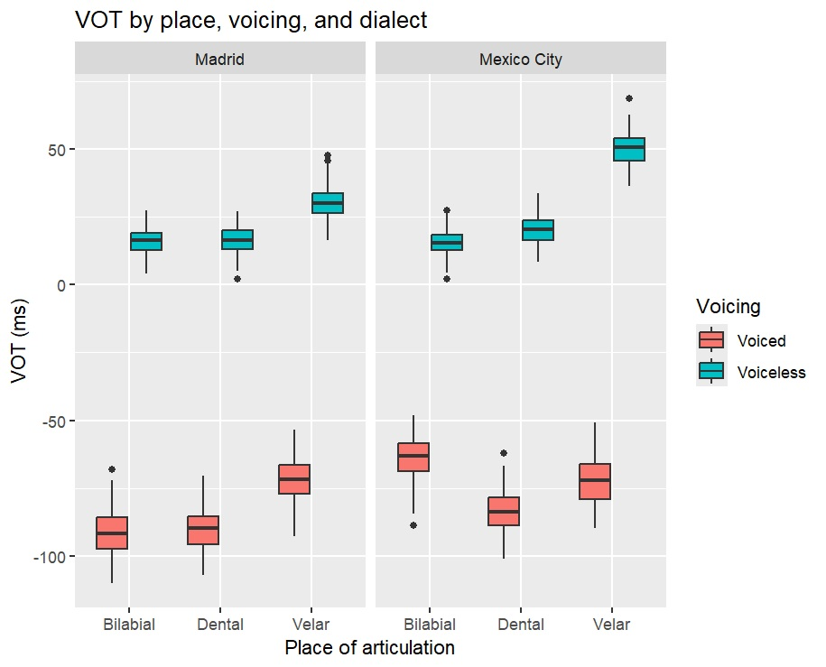
This graph is useful because it lets us ask several questions at once:
voiced and voiceless stops
different?places of articulation?dialects show the same overall
pattern?place differ between
voiced and voiceless stops?That last question will become important when we introduce interactions later in this module.
For now, however, these graphs remain descriptive. We have not yet conducted any inferential tests.
Before fitting a model, we should be explicit about what we are trying to test.
A broad research question for this dataset might be:
Which linguistic and social factors predict VOT in Spanish?
We can then formulate more specific hypotheses.
A clear hypothesis is that Voicing will predict VOT.
Research hypothesis: Voiceless stops will have higher VOT values than voiced stops.
The corresponding null hypothesis is:
Null hypothesis: There is no difference in VOT between voiced and voiceless stops.
Obviously, this question has been answered time and time again in English (and Spanish), but if we switch the question to ’English-origin voiced stops vs. English-origin voiceless stops` in Gurindji Kriol, the question remains unanswered.
And, I have only “recently” answered this question in Media Lengua: Voice onset time production in Ecuadorian Spanish, Quichua, and Media Lengua. So these types of research questions still abound, especially with underdocumented languages or contact languages.
We can also ask whether Place predicts VOT.
Research hypothesis: VOT differs according to place of articulation.
The corresponding null hypothesis is:
Null hypothesis: Place of articulation does not explain variation in VOT.
At this stage we are deliberately leaving this hypothesis broad. We will later compare several possible ways of representing place of articulation. It should also be noted that there is a wealth of evidence that voiceless stops become longer as PoA becomes more retracted (see e.g., Cho & Ladefoged, 1999 & Lisker & Abramson, 1964).
We may also hypothesize that speakers of the two
dialects differ.
Research hypothesis: VOT differs between Madrid Spanish and Mexico City Spanish.
Null hypothesis: The two dialects do not differ in VOT.
There is strong evidence to support this (Lisker & Abramson 1964, Williams, 1977, Stewart 2018). yes, shamelessly plugging my name in the mix
Sex and Following_Vowel?Not every variable in a model needs to have a dramatic directional hypothesis.
Sex and Following_Vowel are plausible
predictors of phonetic variation, so we may include them because there
is a reasonable linguistic reason to control for them. We can still
estimate and interpret their effects without inventing a directional
prediction simply because the variables happen to be available.
The important principle is:
Predictors should be included because they are relevant to the research question, the design, or the linguistic phenomenon—not because we searched through the data and discovered that they happened to produce a small p-value.
Our dataset contains 12 variables, but not all of them should be entered into the regression as fixed effects. That would result in a massive model that would likely result in convergence issues. A convergence issue occurs when the model-fitting algorithm cannot find a stable solution for the parameter estimates. This often happens when the model is too complex for the available data, such as when too many predictors, interactions, or random effects are included. A convergence warning does not automatically mean that the model is unusable, but it is a sign that the estimates may be unstable and that the model structure should be investigated.
| Variable | Role in this analysis | Why? |
|---|---|---|
Token |
Do not include | Unique identifier for each observation |
Speaker |
Random effect | Many observations come from the same speaker |
Dialect |
Fixed effect | Linguistically meaningful speaker-level predictor |
Sex |
Fixed effect | Linguistically/socially meaningful speaker-level predictor |
Word |
Random effect | The same lexical items are repeated across speakers |
Consonant |
Do not include with Voicing + Place |
It largely encodes the combination of voicing and place |
Voicing |
Fixed effect | Central phonetic predictor |
Place |
Fixed effect | Central phonetic predictor |
Following_Vowel |
Fixed effect | Plausible phonetic predictor |
VOT_ms |
Dependent variable | The outcome being predicted |
Word_ID |
Same as Word |
Do not include; computer-readable lexical label; Word
will account for repeated words |
Pair_ID |
Not included | Identifies matched word pairs; useful design information, but we will keep the random structure simpler here |
Consonant as well?The six consonants are largely determined by the combination of Voicing and Place:
voiceless + bilabialvoiced + bilabialvoiceless + dentalvoiced + dentalvoiceless + velarvoiced + velarIf we include Consonant, Voicing, and
Place together as ordinary fixed effects, we are trying to
represent the same information in redundant ways.
This is an early example of an important modelling principle:
More predictors are not automatically better. Predictors should contribute distinct information that is relevant to the research question.
Our proposed fixed effects are:
DialectSexVoicingPlaceFollowing_VowelOur random effects are:
SpeakerWordThe random effects are crossed:
We therefore want the model to account for systematic baseline differences among both speakers and words.
Before fitting the model, it is useful to set the reference levels explicitly.
vot$Dialect = relevel(factor(vot$Dialect), ref = "Madrid")
vot$Sex = relevel(factor(vot$Sex), ref = "Female")
vot$Voicing = relevel(factor(vot$Voicing), ref = "Voiced")
vot$Place = relevel(factor(vot$Place), ref = "Bilabial")
vot$Following_Vowel = relevel(factor(vot$Following_Vowel), ref = "a")Recall that I usually just rename them, but this is how it is formally done
This does not change the underlying data or overall model fit. It changes how the categorical coefficients are expressed.
With these reference levels, the intercept will represent the model’s predicted VOT for:
Therefore, the intercept result automatically tells us
the VOT duration prediction of /b/ produced before /a/ by an average
female speaker from Madrid saying an average word.
This also means the random intercept adjustments are set to zero.
This makes the other coefficients relatively easy to interpret.
For example:
If you want to know the average VOT from a speaker from Mexico city,
you add the coefficient estimate of
DialectMexico City;
If you want that speaker to be male, you add the coefficient estimate
from SexMale;
If you wanto that male speaker from Mexico City to produce a voiceless
segment, you add the coefficient estimate from
VoicingVoiceless;
And if you want that segment to be /t/, you add the coefficient estimate
from PlaceDental.
Precise predictive power!
We can now build our first model.
model6 = lmer(VOT_ms ~ Dialect + Sex + Voicing + Place + Following_Vowel + (1 | Speaker) + (1 | Word), data = vot)
summary(model6)
Linear mixed model fit by maximum likelihood ['lmerMod']
Formula: VOT_ms ~ Dialect + Sex + Voicing + Place + Following_Vowel + (1 | Speaker) + (1 | Word)
Data: vot
AIC BIC logLik -2*log(L) df.resid
14275.1 14347.9 -7124.5 14249.1 1987
Scaled residuals:
Min 1Q Median 3Q Max
-2.9932 -0.6841 -0.0011 0.6430 3.3280
Random effects:
Groups Name Variance Std.Dev.
Word (Intercept) 15.310 3.913
Speaker (Intercept) 7.595 2.756
Residual 63.322 7.958
Number of obs: 2000, groups: Word, 200; Speaker, 10
Fixed effects:
Estimate Std. Error t value
(Intercept) -87.0102 1.7122 -50.816
DialectMexico City 9.7605 1.8156 5.376
SexMale -1.6745 1.8156 -0.922
VoicingVoiceless 103.5754 0.6579 157.430
PlaceDental -3.4415 0.8047 -4.277
PlaceVelar 15.1242 0.8047 18.795
Following_Vowele 0.2342 1.0403 0.225
Following_Voweli 1.6582 1.0410 1.593
Following_Vowelo -0.9535 1.0410 -0.916
Following_Vowelu 0.3700 1.0410 0.355
Correlation of Fixed Effects:
(Intr) DlctMC SexMal VcngVc PlcDnt PlcVlr Following_Vowele Following_Voweli Following_Vowelo
DilctMxcCty -0.424
SexMale -0.424 -0.200
VoicngVclss -0.192 0.000 0.000
PlaceDental -0.234 0.000 0.000 0.000
PlaceVelar -0.222 0.000 0.000 0.000 0.492
Following_Vowele -0.304 0.000 0.000 0.000 0.000 0.000
Following_Voweli -0.304 0.000 0.000 0.000 0.020 -0.020 0.500
Following_Vowelo -0.304 0.000 0.000 0.000 0.020 -0.020 0.500 0.501
Following_Vowelu -0.295 0.000 0.000 0.000 -0.019 -0.039 0.500 0.500 0.500 There is a glaring omission from the model output. The \(p-value\)!
Unlike lm(), models fitted with lmer() do
not have a simple formula for the denominator degrees of freedom because
the data are grouped within random effects such as Speaker
and Word. As a result, lme4 does not provide
p-values for fixed effects by default.
The lmerTest package adds approximate degrees of freedom and p-values
to the lmer() output:
library(lmerTest)
model6 = lmer(VOT_ms ~ Dialect + Sex + Voicing + Place + Following_Vowel + (1 | Speaker) + (1 | Word), data = vot)
summary(model6)
Linear mixed model fit by REML. t-tests use Satterthwaites method ['lmerModLmerTest']
Formula: VOT_ms ~ Dialect + Sex + Voicing + Place + Following_Vowel + (1 | Speaker) + (1 | Word)
Data: vot
REML criterion at convergence: 14230.7
Scaled residuals:
Min 1Q Median 3Q Max
-3.0055 -0.6794 -0.0030 0.6399 3.3245
Random effects:
Groups Name Variance Std.Dev.
Word (Intercept) 16.11 4.014
Speaker (Intercept) 10.88 3.299
Residual 63.32 7.957
Number of obs: 2000, groups: Word, 200; Speaker, 10
Fixed effects:
Estimate Std. Error df t value Pr(>|t|)
(Intercept) -87.0102 1.9598 11.5369 -44.397 2.95e-14 ***
DialectMexico City 9.7605 2.1604 7.0000 4.518 0.00274 **
SexMale -1.6745 2.1604 7.0000 -0.775 0.46366
VoicingVoiceless 103.5754 0.6700 191.9995 154.584 < 2e-16 ***
PlaceDental -3.4415 0.8195 191.9995 -4.199 4.09e-05 ***
PlaceVelar 15.1242 0.8195 191.9995 18.455 < 2e-16 ***
Following_Vowele 0.2342 1.0594 191.9995 0.221 0.82524
Following_Voweli 1.6582 1.0602 191.9995 1.564 0.11945
Following_Vowelo -0.9535 1.0602 191.9995 -0.899 0.36957
Following_Vowelu 0.3700 1.0602 191.9995 0.349 0.72745
---
Signif. codes: 0 ‘***’ 0.001 ‘**’ 0.01 ‘*’ 0.05 ‘.’ 0.1 ‘ ’ 1
Correlation of Fixed Effects:
(Intr) DlctMC SexMal VcngVc PlcDnt PlcVlr Following_Vowele Following_Voweli Following_Vowelo
DilctMxcCty -0.441
SexMale -0.441 -0.200
VoicngVclss -0.171 0.000 0.000
PlaceDental -0.208 0.000 0.000 0.000
PlaceVelar -0.197 0.000 0.000 0.000 0.492
Following_Vowele -0.270 0.000 0.000 0.000 0.000 0.000
Following_Voweli -0.270 0.000 0.000 0.000 0.020 -0.020 0.500
Following_Vowelo -0.270 0.000 0.000 0.000 0.020 -0.020 0.500 0.501
Following_Vowelu -0.262 0.000 0.000 0.000 -0.019 -0.039 0.500 0.500 0.500 How are these p-values calculated?
By default, lmerTest uses the Satterthwaite approximation to estimate the denominator degrees of freedom for each fixed-effect test.
Instead of pretending that every one of our 2,000 observations contributes completely independent information, the approximation takes the mixed structure of the model into account when determining how much information is available for testing each coefficient.
This means that different coefficients can have different estimated degrees of freedom.
For example, a speaker-level predictor such as
Dialect may have much less independent information
available than a within-speaker predictor such as
Voicing, because Dialect varies among speakers
rather than independently across all 2,000 rows. Voicing is
a within-speaker predictor because it can vary from one
observation to the next for the same speaker. In other
words, a single speaker produces both voiced and
voiceless stops. Whereas Dialect does not vary across
speaker. In this dataset, a single speaker is not found producing stops
with both a Mexico city and Madrid accent.
The resulting \(p\)-value is then calculated using the estimated \(t\)-value together with these approximate degrees of freedom.
Important: The p-values produced by lmerTest are therefore approximations, not exact p-values obtained from a simple closed-form degrees-of-freedom calculation.
This is normal practice in linear mixed-effects modelling. The Satterthwaite approximation is widely used because it provides a practical way to conduct significance tests while respecting the grouped structure of the data.
Why does this matter?
The important point is that a mixed-effects model cannot simply treat:
2,000 rows = 2,000 independent observations
because many of those observations come from the same speakers and the same words.
lmerTest estimates the uncertainty associated with each fixed effect while taking that dependency structure into account, giving us more defensible tests of our hypotheses than we would obtain by treating every token as completely independent.Sometimes we have more than one reasonable way to represent a
predictor. For example, Place currently has three
levels:
BilabialDentalVelarHowever, we might hypothesize that bilabial and
dental stops pattern together as relatively
front places of articulation, while velar
stops form a back category.
We can create a binary version of Place:
vot$Front_Back = ifelse(
vot$Place == "Velar",
"Back",
"Front"
)
vot$Front_Back = factor(
vot$Front_Back,
levels = c("Front", "Back")
)
table(vot$Place, vot$Front_Back)The question is now whether the original three-level variable explains the data better than the simpler front vs. back distinction.
REML = FALSEIf we want to compare models that contain different fixed effects, they should be fitted with:
REML = FALSERestricted Maximum Likelihood or Residual Maximum Likelihood
This fits the models using maximum likelihood (ML) and allows their likelihoods to be compared directly.
model_place = lmer(VOT_ms ~ Dialect + Sex + Voicing + Place + Following_Vowel + (1 | Speaker) + (1 | Word), data = vot, REML = FALSE)
summary(model_place)
Linear mixed model fit by maximum likelihood . t-tests use Satterthwaites method ['lmerModLmerTest']
Formula: VOT_ms ~ Dialect + Sex + Voicing + Place + Following_Vowel + (1 | Speaker) + (1 | Word)
Data: vot
AIC BIC logLik -2*log(L) df.resid
14275.1 14347.9 -7124.5 14249.1 1987
Scaled residuals:
Min 1Q Median 3Q Max
-2.9932 -0.6841 -0.0011 0.6430 3.3280
Random effects:
Groups Name Variance Std.Dev.
Word (Intercept) 15.310 3.913
Speaker (Intercept) 7.595 2.756
Residual 63.322 7.958
Number of obs: 2000, groups: Word, 200; Speaker, 10
Fixed effects:
Estimate Std. Error df t value Pr(>|t|)
(Intercept) -87.0102 1.7122 19.1301 -50.816 < 2e-16 ***
DialectMexico City 9.7605 1.8156 9.9914 5.376 0.000313 ***
SexMale -1.6745 1.8156 9.9914 -0.922 0.378109
VoicingVoiceless 103.5754 0.6579 199.2423 157.430 < 2e-16 ***
PlaceDental -3.4415 0.8047 199.2423 -4.277 2.94e-05 ***
PlaceVelar 15.1242 0.8047 199.2423 18.795 < 2e-16 ***
Following_Vowele 0.2342 1.0403 199.2423 0.225 0.822066
Following_Voweli 1.6582 1.0410 199.2423 1.593 0.112783
Following_Vowelo -0.9535 1.0410 199.2423 -0.916 0.360805
Following_Vowelu 0.3700 1.0410 199.2423 0.355 0.722627
---
model_frontback = lmer(VOT_ms ~ Dialect + Sex + Voicing + Front_Back + Following_Vowel + (1 | Speaker) + (1 | Word), data = vot, REML = FALSE)
summary(model_frontback)
Linear mixed model fit by maximum likelihood . t-tests use Satterthwaites method ['lmerModLmerTest']
Formula: VOT_ms ~ Dialect + Sex + Voicing + Front_Back + Following_Vowel + (1 | Speaker) + (1 | Word)
Data: vot
AIC BIC logLik -2*log(L) df.resid
14290.6 14357.8 -7133.3 14266.6 1988
Scaled residuals:
Min 1Q Median 3Q Max
-2.9502 -0.6887 -0.0234 0.6391 3.3709
Random effects:
Groups Name Variance Std.Dev.
Word (Intercept) 17.298 4.159
Speaker (Intercept) 7.603 2.757
Residual 63.322 7.957
Number of obs: 2000, groups: Word, 200; Speaker, 10
Fixed effects:
Estimate Std. Error df t value Pr(>|t|)
(Intercept) -88.7228 1.6844 17.9090 -52.672 < 2e-16 ***
DialectMexico City 9.7605 1.8165 9.9897 5.373 0.000314 ***
SexMale -1.6745 1.8165 9.9897 -0.922 0.378346
VoicingVoiceless 103.5754 0.6875 199.2476 150.663 < 2e-16 ***
Front_BackBack 16.8177 0.7320 199.2476 22.975 < 2e-16 ***
Following_Vowele 0.2342 1.0870 199.2476 0.216 0.829594
Following_Voweli 1.7456 1.0876 199.2476 1.605 0.110072
Following_Vowelo -0.8661 1.0876 199.2476 -0.796 0.426762
Following_Vowelu 0.2854 1.0876 199.2476 0.262 0.793297 Everything in these models is identical except for the way we
represent Place.
Two common ways of comparing models are AIC and BIC:
AIC(model_place, model_frontback)
df AIC
model_place 13 14275.07
model_frontback 12 14290.57
BIC(model_place, model_frontback)
df BIC
model_place 13 14347.88
model_frontback 12 14357.78Both statistics reward a model for fitting the data well but penalize it for unnecessary complexity.
Lower AIC and BIC values indicate a better balance between model fit and complexity.
BIC penalizes additional parameters more strongly than AIC, particularly with larger datasets, so it tends to favour simpler models more readily.
The actual AIC or BIC number is not important by itself. We are interested in the difference between competing models. If both AIC and BIC are lower for the same model, that gives us particularly clear evidence in favour of that model.
anova()Because the binary model simply forces Bilabial and
Dental to behave as one category, it is a simpler version
of the three-level model. The models are therefore
nested, and we can compare them with a likelihood-ratio
test:
anova(model_frontback, model_place)
Data: vot
Models:
model_frontback: VOT_ms ~ Dialect + Sex + Voicing + Front_Back + Following_Vowel + (1 | Speaker) + (1 | Word)
model_place: VOT_ms ~ Dialect + Sex + Voicing + Place + Following_Vowel + (1 | Speaker) + (1 | Word)
npar AIC BIC logLik -2*log(L) Chisq Df Pr(>Chisq)
model_frontback 12 14291 14358 -7133.3 14267
model_place 13 14275 14348 -7124.5 14249 17.498 1 2.876e-05 ***
---
Signif. codes: 0 ‘***’ 0.001 ‘**’ 0.01 ‘*’ 0.05 ‘.’ 0.1 ‘ ’ 1This asks whether allowing all three places to differ significantly improves the model.
Place model provides a significantly better
fit.AIC, BIC, and the likelihood-ratio test therefore give us complementary information when choosing between models.
The same approach can be used when doing backward model
comparison. For example, we could fit a model without
Following_Vowel and ask whether removing that predictor
significantly worsens the model.
Important: Model comparison should be motivated by the research question rather than by repeatedly changing the model simply to produce significant results.
Also note that backward model comparison is actually my preference for building the most succinct and parsimonious model where only significant predictors are analyzed in the final model. In fact, most of my publications involving mixed effects models involve some sort of backward elimination. However, over the last few years, almost every reviewer I have dealt with finds this to be abhorrent. So, to make my life and your life easier, I now only recommend full-model output with minor adjustments like testing binary and trinary variables like we are doing here.
Once all comparisons of the fixed-effect structure are complete, the final model can be refitted using the default:
Anyway, both AIC and BIC values and the Anova in our example suggest
that the model is better fit with the trinary variable of
place.
REML = TRUEFor example:
final_model = update(model_place, REML = TRUE)
#or
final_model = lmer(VOT_ms ~ Dialect + Sex + Voicing + Place + Following_Vowel + (1 | Speaker) + (1 | Word), data = vot, REML = TRUE)
summary(final_model)
Linear mixed model fit by REML. t-tests use Satterthwaite's method ['lmerModLmerTest']
Formula: VOT_ms ~ Dialect + Sex + Voicing + Place + Following_Vowel + (1 | Speaker) + (1 | Word)
Data: vot
REML criterion at convergence: 14230.7
Scaled residuals:
Min 1Q Median 3Q Max
-3.0055 -0.6794 -0.0030 0.6399 3.3245
Random effects:
Groups Name Variance Std.Dev.
Word (Intercept) 16.11 4.014
Speaker (Intercept) 10.88 3.299
Residual 63.32 7.957
Number of obs: 2000, groups: Word, 200; Speaker, 10
Fixed effects:
Estimate Std. Error df t value Pr(>|t|)
(Intercept) -87.0102 1.9598 11.5369 -44.397 2.95e-14 ***
DialectMexico City 9.7605 2.1604 7.0000 4.518 0.00274 **
SexMale -1.6745 2.1604 7.0000 -0.775 0.46366
VoicingVoiceless 103.5754 0.6700 191.9995 154.584 < 2e-16 ***
PlaceDental -3.4415 0.8195 191.9995 -4.199 4.09e-05 ***
PlaceVelar 15.1242 0.8195 191.9995 18.455 < 2e-16 ***
Following_Vowele 0.2342 1.0594 191.9995 0.221 0.82524
Following_Voweli 1.6582 1.0602 191.9995 1.564 0.11945
Following_Vowelo -0.9535 1.0602 191.9995 -0.899 0.36957
Following_Vowelu 0.3700 1.0602 191.9995 0.349 0.72745
---
Signif. codes: 0 ‘***’ 0.001 ‘**’ 0.01 ‘*’ 0.05 ‘.’ 0.1 ‘ ’ 1
Correlation of Fixed Effects:
(Intr) DlctMC SexMal VcngVc PlcDnt PlcVlr Following_Vowele Following_Voweli Following_Vowelo
DilctMxcCty -0.441
SexMale -0.441 -0.200
VoicngVclss -0.171 0.000 0.000
PlaceDental -0.208 0.000 0.000 0.000
PlaceVelar -0.197 0.000 0.000 0.000 0.492
Following_Vowele -0.270 0.000 0.000 0.000 0.000 0.000
Following_Voweli -0.270 0.000 0.000 0.000 0.020 -0.020 0.500
Following_Vowelo -0.270 0.000 0.000 0.000 0.020 -0.020 0.500 0.501
Following_Vowelu -0.262 0.000 0.000 0.000 -0.019 -0.039 0.500 0.500 0.500 or, if the binary model is preferred (which is not in this case):
final_model = update(model_frontback, REML = TRUE)We use ML (REML = FALSE) to compare fixed-effect
structures and then REML to obtain the final model
estimates.
Before interpreting the final model, make sure R has not produced a convergence warning. A convergence warning indicates that the model-fitting algorithm had difficulty finding a stable solution, so the estimates should be investigated before being trusted.
We can also check for a singular fit:
isSingular(final_model)Ideally, this returns:
FALSEA basic residual check can also be produced with:
plot(final_model)The residuals are centred around zero, but there is some visible structure rather than a completely random cloud. This suggests that the model may not capture all of the structure in the data.
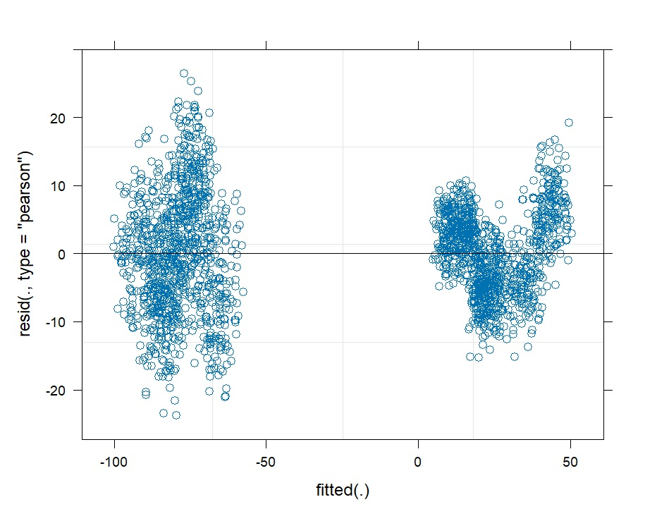
We can examine this structure more closely by graphing a smoothed
residual trend (aka LOESS (locally estimated scatterplot
smoothing)).
I emphasize explore here because if this pattern had not been
anticipated in our original hypotheses, investigating its source would
be an exploratory follow-up analysis rather than a confirmatory test.
Again, not necessarily wrong, but your analysis is now data-driven not
confirmatory.
vot$Fitted = fitted(final_model)
vot$Residual = resid(final_model)
ggplot(vot, aes(x = Fitted, y = Residual)) +
geom_point(alpha = 0.35) +
geom_smooth(
method = "loess",
se = FALSE
) +
geom_hline(
yintercept = 0,
linetype = "dashed"
) +
facet_wrap(~Voicing) +
labs(
x = "Fitted VOT (ms)",
y = "Residual",
title = "Residuals by voicing"
) +
theme_minimal()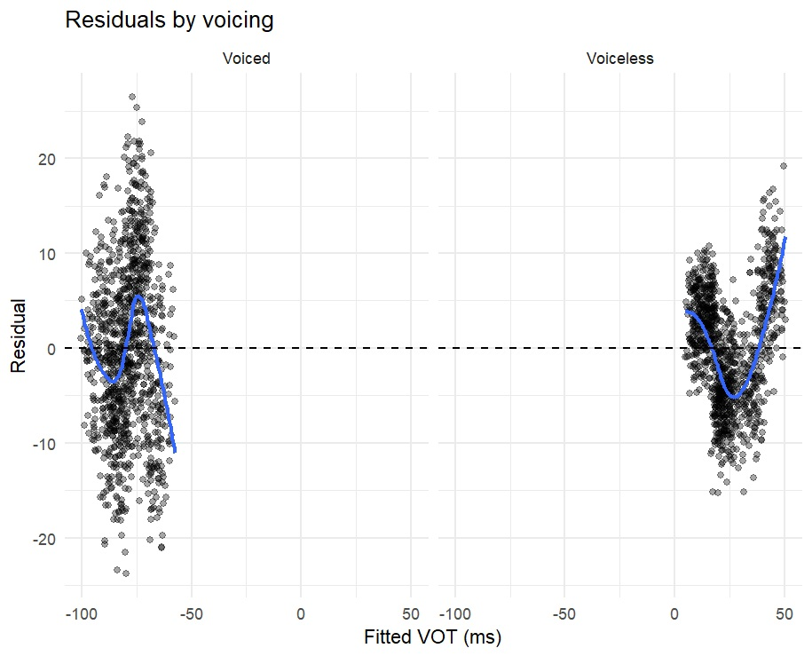
What these graphs should show in a perfect world are residuals completely randomly distributed around zero.
Another check we can perform is the Q-Q plot.
A Q-Q plot checks whether the model residuals are approximately normally
distributed. It compares:
If the residuals are approximately normal, the points should follow the diagonal reference line.
qqnorm(resid(final_model))
qqline(resid(final_model))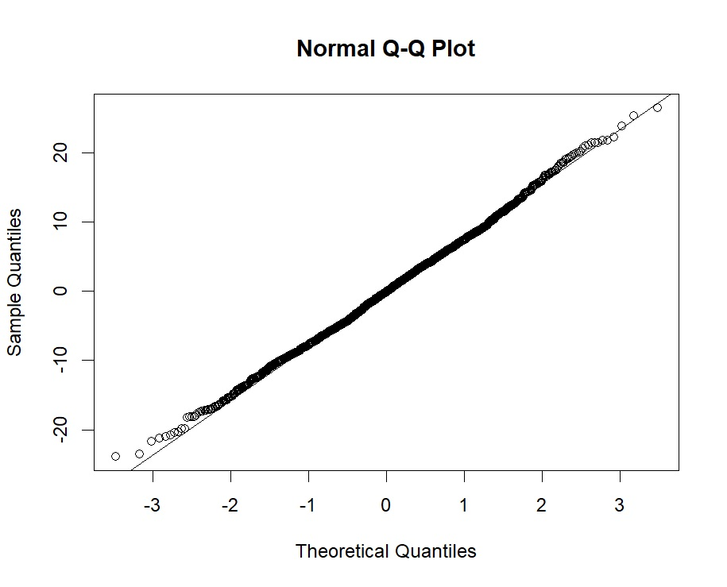
For our data, the Q-Q plot points follow the line very closely, with only minor deviations at the extreme tails. We therefore have no major concern about the normality of the residuals.
In conclusion, the residual diagnostics suggest that the additive
model may not capture all of the structure in the data. Given the
well-established relationship between place of articulation and VOT,
particularly among voiceless stops, a Voicing * Place
interaction is theoretically motivated and will be evaluated below.
The coefficient estimate gives us the model’s best estimate of an effect, but it does not tell us how much uncertainty surrounds that estimate.
A 95% confidence interval gives us a range of plausible values for the population coefficient.
For example, suppose a coefficient is:
Estimate = 9.76
95% CI = 5.1 to 14.4The model estimates an effect of approximately 9.76 ms, but the confidence interval also tells us about the uncertainty surrounding that estimate.
A quick method is the Wald confidence interval. This is fast and is based on the estimated coefficient and standard error. They are useful for quick analyses, but they rely on a relatively simple approximation.
For classroom work, the Wald intervals are often sufficient. For a final research analysis, profile-likelihood intervals are worth considering when computationally practical.
confint(
final_model,
parm = "beta_",
method = "Wald"
)
2.5 % 97.5 %
(Intercept) -90.3661387 -83.654244
DialectMexico City 6.2020217 13.318978
SexMale -5.2329783 1.883978
VoicingVoiceless 102.2859082 104.864892
PlaceDental -5.0187076 -1.864314
PlaceVelar 13.5470370 16.701431
Following_Vowele -1.8046155 2.273116
Following_Voweli -0.3822015 3.698627
Following_Vowelo -2.9939515 1.086877
Following_Vowelu -1.6703517 2.410428Profile-likelihood intervals repeatedly refit the model while moving each parameter away from its estimated value. They therefore allow the uncertainty around a coefficient to be asymmetrical and are generally more robust than simple Wald intervals.
They can take considerably longer to calculate because the model must be refitted many times. For a large or complicated mixed-effects model, R may need to fit or partially refit the model many times for every coefficient. As a result, calculating profile confidence intervals can take anywhere from several minutes to hours.
confint(
final_model,
parm = "beta_",
method = "profile"
)
2.5 % 97.5 %
(Intercept) -90.5609193 -83.459465
DialectMexico City 5.8311739 13.689823
SexMale -5.6038261 2.254823
VoicingVoiceless 102.2796429 104.871157
PlaceDental -5.0263708 -1.856651
PlaceVelar 13.5393739 16.709094
Following_Vowele -1.8145218 2.283022
Following_Voweli -0.3921153 3.708541
Following_Vowelo -3.0038653 1.096791
Following_Vowelu -1.6802654 2.420342I was recently asked by a reviewer to bootstrap my confidence intervals.
confint(
final_model,
method = "boot",
nsim = 500
)
2.5 % 97.5 %
.sig01 3.2129708 4.332567
.sig02 1.0509309 3.666312
.sigma 7.7035380 8.228622
(Intercept) -90.3205460 -83.542582
DialectMexico City 5.8294078 13.505425
SexMale -5.0579923 1.617117
VoicingVoiceless 102.1807250 104.785652
PlaceDental -5.0451852 -1.840595
PlaceVelar 13.4897414 16.675195
Following_Vowele -1.7342606 2.243067
Following_Voweli -0.4177917 3.695794
Following_Vowelo -2.9533940 1.421385
Following_Vowelu -1.7899339 2.489252Bootstrap confidence intervals estimate uncertainty by repeatedly simulating new datasets from the fitted model, refitting the model to each simulated dataset, and examining the resulting distribution of coefficient estimates. Note that this run contains 500 simulations.
Because hundreds or thousands of models may need to be fitted, this method can be very computationally expensive. Complex mixed-effects models may take hours to process. When I ran this method on my data, it took 12 hours!
Bootstrap intervals can be particularly useful when we do not want to rely heavily on the assumptions underlying simpler approximations. In published research, bootstrap confidence intervals are sometimes preferred as a more robust estimate of uncertainty.
*Note: the .sig01 is the SD of one of the random intercepts, .sig02 is the other, and sigma is the residual SD. These are not reported in the model output.
The following is the table format I often use when reporting model results in my papers.
I generally round values to two decimal places. With measurements such as milliseconds, even reporting to the nearest tenth of a millisecond is often more precise than is linguistically meaningful, so additional decimal places usually add little. For very small \(p\)-values, however, I prefer to report enough digits to show at least one non-zero value. For example, I would report \(p = 0.00003\) rather than \(p = 0.00\). Reporting values as \(p < 0.01\) or \(p < 0.001\) is also perfectly acceptable; I simply prefer showing the actual value when it is practical to do so.
I usually place the 95% confidence interval immediately after the standard error, although the exact column order is largely a matter of presentation. Significance codes are also optional and are often omitted when space is limited. I generally like to include them because they make statistically significant effects easy to identify at a glance.
Finally, predictor names should be made human-readable. The table is
intended for the reader, not for R, so labels such as
DialectMexico City or Following_Vowel:voweli
should be rewritten as clear forms such as
Dialect: Mexico City and
Following vowel: i.
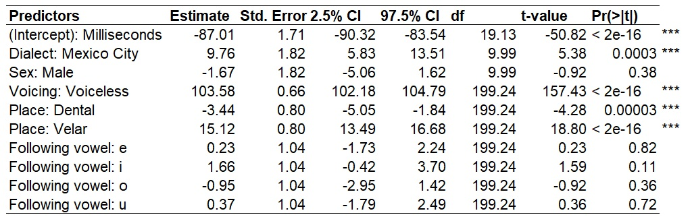
As mentioned in the previous unit, we can also examine the estimated adjustments for individual speakers and words using:
ranef(final_model)$Word
(Intercept)
bado 5.58330599
bala 0.83793577
bama 2.32400481
bana 2.51066083
bano 4.21928127
bara 2.32400481
basa 4.57105607
bedo 2.75887743
bela 3.44088979
bema 2.57940049
bena -0.24915604
beno 8.13600647
bera 6.95863776
besa 4.83363083
bido 3.73238707
bila 4.14159449
bima 4.65130899
bina 5.09641179
bino 3.58162644
bira 2.72731622
bisa 5.41947028
bodo 4.81050503
bola -0.55226586
boma 7.43086832
bona 6.00941097
bono 3.05163105
bora 0.76150533
bosa 5.61456171
budo 1.86451635
bula 3.41519709
buma 2.65421488
buna 1.49838340
bura 2.09424683
busa 4.29822362
dado -1.88902911
dala -1.19983767
dama 0.02060550
dana -2.32695284
dano 1.13336252
dara -0.03682712
dasa -4.40888531
dedo -1.09520262
dela 4.14552395
dema -1.21724693
dena -1.50441003
deno -3.23456771
dera 3.54966052
desa -0.52805549
dido -2.87845873
dila -2.51232578
dima 2.11817920
dina -1.01189859
dira -1.88774604
disa 0.10803750
dodo -2.04442941
dola -2.10186203
doma -0.37170435
dona -0.61579299
dora 0.99232037
dosa 2.27019617
dudo -4.45198727
dula 1.06872332
duma 1.51382612
duna -3.15257425
duno -1.96802646
dura 0.96821624
dusa -1.57317720
gado -8.08151806
gala 2.62966556
gama -5.54730370
gana -2.89104503
gara 0.51183770
gasa 0.52619585
gedo -5.06217754
gela -2.98024507
gema -4.07864393
gena -1.84595083
gera -4.53810489
gesa -8.21379256
gido 0.27621121
gila -1.24575322
gima -7.42693894
gina -1.54009539
gino -1.37497661
gira -2.68156872
gisa -5.00758982
godo -3.87921832
gola -2.17777695
goma 2.03634154
gona -4.00844171
gono -3.13259426
gora -1.76139046
gosa -3.68538323
gudo -6.60265559
gula -1.85010629
guma -3.40078703
guna 0.12414002
guno -3.26438456
gura -4.31252987
gusa -4.52072312
kado 1.27612229
kala 2.82680303
kama 6.27276022
kana 2.80526580
kara 5.54049432
kasa 0.67307978
kedo 3.47704797
kela 3.09655687
kema 1.65356229
kena 2.63709591
kera 5.33642904
kesa 1.38075734
kido 3.81879879
kila 4.42184130
kima -0.15123106
kina 0.47334868
kino 1.27740536
kira 3.75418709
kisa 4.35722960
kodo 3.38931048
kola 1.92477867
koma 1.04175214
kona 6.06710639
kono 1.94631590
kora 1.04893122
kosa 0.90534967
kudo 1.78580929
kula 2.93446169
kuma 4.24823287
kuna 4.60000767
kuno 2.22373302
kura 5.13125941
kusa 6.83270077
pado -4.68665152
pala -1.96578115
pama -6.05067625
pana -2.42524211
pano -2.66215167
para -2.36780949
pasa -5.40455927
pedo -3.06723112
pela -3.00261942
pema -3.16055913
pena -4.02204842
peno -2.20574182
pera -4.43125584
pesa -4.90507496
pido -2.40242181
pila -3.77362561
pima -3.22083665
pina -5.62582761
pino -3.09161325
pira -4.74280107
pisa -3.32852281
podo -4.77026105
pola -2.91805905
poma -3.24829662
pona -3.54981787
pono -2.25040485
pora -4.42566533
posa -5.36612448
pudo -3.62417555
pula -3.53084754
puma -1.70018278
puna -2.52577670
pura -5.22510983
pusa -3.45187769
tado 0.61259223
tala -1.13192360
tama 0.82796456
tana 1.16538120
tano 1.48843969
tara -0.50016478
tasa 2.89553888
tedo 1.14797194
tela -0.89088607
tema 0.53057127
tena 0.53775035
teno 2.74890622
tera -0.76884175
tesa 2.05253570
tido 2.37274929
tila 0.66412885
tima -0.08967429
tina 0.86514302
tira 0.86514302
tisa -0.72861219
todo -0.28943212
tola -0.74171400
toma 1.83557482
tona 0.11977529
tora 0.65102703
tosa -0.01662718
tudo 1.63917282
tula 1.76121713
tuma 0.24643178
tuna 2.97448123
tuno 1.00741400
tura -1.26835357
tusa 1.53866573
$Speaker
(Intercept)
MAD01 -0.53455180
MAD02 -1.21573852
MAD03 2.41660949
MAD04 4.81533904
MAD05 -5.48165820
MEX01 -1.83473416
MEX02 1.58091679
MEX03 0.04022986
MEX04 2.01868372
MEX05 -1.80509622Or separately:
ranef(final_model)$Speaker
ranef(final_model)$WordThese values are random-intercept adjustments, not complete intercepts.
For example:
Speaker MAD03 +2.42
Speaker MEX05 -1.81This means that MAD03 is estimated to have a baseline
VOT approximately 2.42 ms above the overall model intercept, while
Speaker MEX05 is approximately 1.81 ms below it. The same
logic can be applied to word. For example,
tasa is 2.89 ms above the overall model intercept and
todo is 0.28 below it.
These speaker- and word-specific adjustments are one of the ways mixed-effects models account for systematic variation among repeated observations.
So far, our model has assumed that each predictor has an independent, additive effect.
For example:
Voicing + PlaceThis assumes that the effect of Voicing is the same in
all three places of articulation.
But what if the difference between voiced and
voiceless stops is different across PoA?
That is an interaction.
An interaction occurs when the effect of one predictor depends on the value of another predictor.
For example:
vot %>%
group_by(Voicing, Place) %>%
summarise(
Mean_VOT = mean(VOT_ms),
SD_VOT = sd(VOT_ms),
N = n(),
.groups = "drop"
)
# A tibble: 6 x 5
Voicing Place Mean_VOT SD_VOT N
<chr> <chr> <dbl> <dbl> <int>
1 Voiced Bilabial -77.7 15.8 340
2 Voiced Dental -87.2 8.13 330
3 Voiced Velar -71.8 8.19 330
4 Voiceless Bilabial 15.8 4.62 340
5 Voiceless Dental 18.4 5.39 330
6 Voiceless Velar 40.2 11.6 330Here we can see that VOT varies by place of articulation
for both voiced and voiceless stops. Among voiced stops, dental stops
show approximately 9.5 ms more prevoicing than bilabial stops, while
velar stops show approximately 5.9 ms less prevoicing. Among voiceless
stops, dental VOT is approximately 2.6 ms longer than bilabial VOT,
while velar VOT is approximately 24.4 ms longer.
In R, we can test this interaction by changing the + to
*:
Voicing * PlaceThe model output will then show a combined output, in addition to the normal singular predictors:
Voicing
Place
Voicing:PlaceA
Voicing:PlaceBThe first two terms are the main effects and the final two terms are the interaction coefficients.
For example:
model_interaction = lmer(VOT_ms ~ Dialect + Sex + Voicing * Place + Following_Vowel + (1 | Speaker) + (1 | Word), data = vot, REML = FALSE)
summary(model_interaction)
Linear mixed model fit by maximum likelihood . t-tests use Satterthwaite's method ['lmerModLmerTest']
Formula: VOT_ms ~ Dialect + Sex + Voicing * Place + Following_Vowel + (1 | Speaker) + (1 | Word)
Data: vot
AIC BIC logLik -2*log(L) df.resid
14049.2 14133.2 -7009.6 14019.2 1985
Scaled residuals:
Min 1Q Median 3Q Max
-3.2779 -0.6781 0.0058 0.6755 3.3182
Random effects:
Groups Name Variance Std.Dev.
Word (Intercept) 0.4916 0.7011
Speaker (Intercept) 7.5286 2.7438
Residual 63.3219 7.9575
Number of obs: 2000, groups: Word, 200; Speaker, 10
Fixed effects:
Estimate Std. Error df t value Pr(>|t|)
(Intercept) -81.9657 1.5478 13.0927 -52.955 < 2e-16 ***
DialectMexico City 9.7605 1.8080 9.9967 5.399 0.000302 ***
SexMale -1.6745 1.8080 9.9967 -0.926 0.376177
VoicingVoiceless 93.4865 0.6336 199.0562 147.557 < 2e-16 ***
PlaceDental -9.5042 0.6387 199.0562 -14.881 < 2e-16 ***
PlaceVelar 5.9007 0.6387 199.0562 9.239 < 2e-16 ***
Following_Vowele 0.2342 0.5841 199.0562 0.401 0.688825
Following_Voweli 1.6582 0.5846 199.0562 2.837 0.005030 **
Following_Vowelo -0.9535 0.5846 199.0562 -1.631 0.104427
Following_Vowelu 0.3700 0.5846 199.0562 0.633 0.527440
VoicingVoiceless:PlaceDental 12.1253 0.9028 199.0562 13.432 < 2e-16 ***
VoicingVoiceless:PlaceVelar 18.4472 0.9028 199.0562 20.434 < 2e-16 ***
---
Signif. codes: 0 ‘***’ 0.001 ‘**’ 0.01 ‘*’ 0.05 ‘.’ 0.1 ‘ ’ 1
Correlation of Fixed Effects:
(Intr) DlctMC SexMal VcngVc PlcDnt PlcVlr Following_Vowele Following_Voweli Following_Vowelo Following_Vowelu VcV:PD
DilctMxcCty -0.467
SexMale -0.467 -0.200
VoicngVclss -0.205 0.000 0.000
PlaceDental -0.204 0.000 0.000 0.496
PlaceVelar -0.199 0.000 0.000 0.496 0.492
Following_Vowele -0.189 0.000 0.000 0.000 0.000 0.000
Following_Voweli -0.189 0.000 0.000 0.000 0.014 -0.014 0.500
Following_Vowelo -0.189 0.000 0.000 0.000 0.014 -0.014 0.500 0.501
Following_Vowelu -0.183 0.000 0.000 0.000 -0.013 -0.027 0.500 0.500 0.500
VcngVcls:PD 0.144 0.000 0.000 -0.702 -0.707 -0.348 0.000 0.000 0.000 0.000
VcngVcls:PV 0.144 0.000 0.000 -0.702 -0.348 -0.707 0.000 0.000 0.000 0.000 0.493The interaction asks:
Does the effect of
Voicingdiffer acrossplace of articulation?
Because this model differs from the additive model in its fixed
effects, we again use REML = FALSE while comparing
them.
anova(model_place, model_interaction)
Data: vot
Models:
model_place: VOT_ms ~ Dialect + Sex + Voicing + Place + Following_Vowel + (1 | Speaker) + (1 | Word)
model_interaction: VOT_ms ~ Dialect + Sex + Voicing * Place + Following_Vowel + (1 | Speaker) + (1 | Word)
npar AIC BIC logLik -2*log(L) Chisq Df Pr(>Chisq)
model_place 13 14275 14348 -7124.5 14249
model_interaction 15 14049 14133 -7009.6 14019 229.87 2 < 2.2e-16 ***
---
Signif. codes: 0 ‘***’ 0.001 ‘**’ 0.01 ‘*’ 0.05 ‘.’ 0.1 ‘ ’ 1AIC(model_place, model_interaction)
df AIC
model_place 13 14275.07
model_interaction 15 14049.20
BIC(model_place, model_interaction)
df BIC
model_place 13 14347.88
model_interaction 15 14133.21In this case, the interaction model is clearly better. Both AIC and
BIC are substantially lower for the interaction model, and the
likelihood-ratio test produced by anova() is significant,
\(\chi^2(2)=229.87\), \(p<.001\). This means that allowing the
effect of Place to differ according to Voicing
significantly improves the model and more than justifies the two
additional interaction terms. We would therefore retain the
Voicing * Place interaction model.
We now need to set REML to TRUE and re-run
our final model with the interaction.
model_final2 = lmer(VOT_ms ~ Dialect + Sex + Voicing * Place + Following_Vowel + (1 | Speaker) + (1 | Word), data = vot, REML = TRUE)
summary(model_final2)
Linear mixed model fit by REML. t-tests use Satterthwaite's method ['lmerModLmerTest']
Formula: VOT_ms ~ Dialect + Sex + Voicing * Place + Following_Vowel + (1 | Speaker) + (1 | Word)
Data: vot
REML criterion at convergence: 14005.9
Scaled residuals:
Min 1Q Median 3Q Max
-3.2788 -0.6795 0.0061 0.6731 3.2877
Random effects:
Groups Name Variance Std.Dev.
Word (Intercept) 0.8167 0.9037
Speaker (Intercept) 10.8853 3.2993
Residual 63.3204 7.9574
Number of obs: 2000, groups: Word, 200; Speaker, 10
Fixed effects:
Estimate Std. Error df t value Pr(>|t|)
(Intercept) -81.9657 1.8185 8.5739 -45.074 1.72e-11 ***
DialectMexico City 9.7605 2.1604 6.9996 4.518 0.00274 **
SexMale -1.6745 2.1604 6.9996 -0.775 0.46367
VoicingVoiceless 93.4865 0.6485 189.9964 144.165 < 2e-16 ***
PlaceDental -9.5042 0.6537 189.9964 -14.539 < 2e-16 ***
PlaceVelar 5.9007 0.6537 189.9964 9.026 < 2e-16 ***
Following_Vowele 0.2342 0.5979 189.9964 0.392 0.69563
Following_Voweli 1.6582 0.5983 189.9964 2.771 0.00614 **
Following_Vowelo -0.9535 0.5983 189.9964 -1.594 0.11266
Following_Vowelu 0.3700 0.5983 189.9964 0.618 0.53700
VoicingVoiceless:PlaceDental 12.1253 0.9240 189.9964 13.123 < 2e-16 ***
VoicingVoiceless:PlaceVelar 18.4472 0.9240 189.9964 19.965 < 2e-16 ***
---
Signif. codes: 0 ‘***’ 0.001 ‘**’ 0.01 ‘*’ 0.05 ‘.’ 0.1 ‘ ’ 1
Correlation of Fixed Effects:
(Intr) DlctMC SexMal VcngVc PlcDnt PlcVlr Following_Vowele Following_Voweli Following_Vowelo Following_Vowelu VcV:PD
DilctMxcCty -0.475
SexMale -0.475 -0.200
VoicngVclss -0.178 0.000 0.000
PlaceDental -0.178 0.000 0.000 0.496
PlaceVelar -0.173 0.000 0.000 0.496 0.492
Following_Vowele -0.164 0.000 0.000 0.000 0.000 0.000
Following_Voweli -0.165 0.000 0.000 0.000 0.014 -0.014 0.500
Following_Vowelo -0.165 0.000 0.000 0.000 0.014 -0.014 0.500 0.501
Following_Vowelu -0.160 0.000 0.000 0.000 -0.013 -0.027 0.500 0.500 0.500
VcngVcls:PD 0.125 0.000 0.000 -0.702 -0.707 -0.348 0.000 0.000 0.000 0.000
VcngVcls:PV 0.125 0.000 0.000 -0.702 -0.348 -0.707 0.000 0.000 0.000 0.000 0.493Interactions change the interpretation of the main effects.
With Voiced as the reference level of
Voicing and Bilabial as the reference level of
Place:
Voicing: Voiceless describes the voiceless-voiced
difference for bilabial stops;Place: Dental describes the dental-bilabial difference
for voiced stops;Place: Velar describes the velar-bilabial difference
for voiced stops;Voicing:Voiceless * Place:Dental tells us how much the
dental-bilabial difference changes for voiceless stops;Voicing:Voiceless * Place:Velar tells us how much the
velar-bilabial difference changes for voiceless stops.Notice that Dialect is not involved in the interaction
in this model. The Dialect: Mexico City coefficient
therefore represents the Mexico City-Madrid difference across the other
conditions in the model.
Our interaction model gives approximately the following coefficients:
(Intercept) -81.97
Dialect: Mexico City 9.76
Sex: Male -1.67
Voicing: Voiceless 93.49
Place: Dental -9.50
Place: Velar 5.90
Voiceless * Dental 12.13
Voiceless * Velar 18.45This becomes clearer if we calculate some predictions.
Suppose we want to predict the VOT of a voiced dental stop before /a/ produced by an average male speaker from Mexico City saying an average word.
Because /a/ is the reference level of
Following_Vowel, it contributes 0. Voiced is
also the reference level of Voicing, so the
Voicing: Voiceless coefficient and both interaction
coefficients contribute 0.
We therefore include:
The model predicts a VOT of approximately -83.38 ms:
(-81.97) + (9.76) + (-1.67) + (-9.50)
[1] -83.38What happens if the same stop is voiceless?
Now imagine exactly the same combination:
but the stop is voiceless.
We now add the Voicing: Voiceless coefficient:
\[ +93.49 \]
However, because the stop is both voiceless and
dental, we must also add the Voiceless * Dental
interaction coefficient:
\[ +12.13 \]
The predicted VOT is therefore approximately 22.24 ms:
(-81.97) + (9.76) + (-1.67) + (-9.50) + (93.49) + (12.13)
[1] 22.24The interaction is more interesting if we use it to examine place of articulation among voiceless stops. For voiceless dental stops, the dental-bilabial difference is:
\[ -9.50+12.13=2.63\text{ ms} \]
So the model predicts that voiceless dental stops have VOTs approximately 2.63 ms longer than voiceless bilabial stops.
For voiceless velar stops, the velar-bilabial difference is:
\[ 5.90+18.45=24.35\text{ ms} \]
So the model predicts that voiceless velar stops have VOTs approximately 24.35 ms longer than voiceless bilabial stops.
The predicted ordering among voiceless stops is therefore:
\[ Bilabial < Dental < Velar \]
This is the phonetic pattern we are interested in. Voiceless bilabial stops have the shortest VOTs, dental stops are slightly longer, and velar stops are substantially longer.
An interaction coefficient contributes to a prediction only when all of the non-reference conditions represented by that interaction term are present.
Consider:
\[ \text{VoicingVoiceless} \times \text{PlaceDental} \]
With dummy coding:
VoicingVoiceless = 1 for voiceless stops and 0 for
voiced stops
PlaceDental = 1 for dental stops and 0 otherwise
The interaction term is their product.
For a voiceless dental stop:
\[ 1 \times 1 = 1 \]
so the Voiceless x Dental interaction coefficient is
included.
For the other relevant combinations:
Voiced + Bilabial → \(0 * 0 = 0\)
Voiced + Dental → \(0 * 1 = 0\)
Voiceless + Bilabial → \(1 * 0 = 0\)
Voiceless + Dental → \(1 * 1 = 1\)
The Voiceless * Velar coefficient works in exactly the
same way. It contributes only when the stop is both voiceless
and velar.
Because Place has three levels, the model requires
two interaction coefficients. Bilabial is
the reference level, so there is no separate
Voiceless * Bilabial coefficient. Its value is already
represented by the main Voicing: Voiceless coefficient.
#Final model with interactions and CI95
Linear mixed model fit by REML. t-tests use Satterthwaites method ['lmerModLmerTest']
Formula: VOT_ms ~ Dialect + Sex + Voicing * Place + Following_Vowel + (1 | Speaker) + (1 | Word)
Data: vot
REML criterion at convergence: 14005.9
Scaled residuals:
Min 1Q Median 3Q Max
-3.2788 -0.6795 0.0061 0.6731 3.2877
Random effects:
Groups Name Variance Std.Dev.
Word (Intercept) 0.8167 0.9037
Speaker (Intercept) 10.8853 3.2993
Residual 63.3204 7.9574
Number of obs: 2000, groups: Word, 200; Speaker, 10
Fixed effects:
Estimate Std. Error df t value Pr(>|t|)
(Intercept) -81.9657 1.8185 8.5739 -45.074 1.72e-11 ***
DialectMexico City 9.7605 2.1604 6.9996 4.518 0.00274 **
SexMale -1.6745 2.1604 6.9996 -0.775 0.46367
VoicingVoiceless 93.4865 0.6485 189.9964 144.165 < 2e-16 ***
PlaceDental -9.5042 0.6537 189.9964 -14.539 < 2e-16 ***
PlaceVelar 5.9007 0.6537 189.9964 9.026 < 2e-16 ***
Following_Vowele 0.2342 0.5979 189.9964 0.392 0.69563
Following_Voweli 1.6582 0.5983 189.9964 2.771 0.00614 **
Following_Vowelo -0.9535 0.5983 189.9964 -1.594 0.11266
Following_Vowelu 0.3700 0.5983 189.9964 0.618 0.53700
VoicingVoiceless:PlaceDental 12.1253 0.9240 189.9964 13.123 < 2e-16 ***
VoicingVoiceless:PlaceVelar 18.4472 0.9240 189.9964 19.965 < 2e-16 ***
---
Signif. codes: 0 ‘***’ 0.001 ‘**’ 0.01 ‘*’ 0.05 ‘.’ 0.1 ‘ ’ 1
Correlation of Fixed Effects:
(Intr) DlctMC SexMal VcngVc PlcDnt PlcVlr Following_Vowele Following_Voweli Following_Vowelo Following_Vowelu VcV:PD
DilctMxcCty -0.475
SexMale -0.475 -0.200
VoicngVclss -0.178 0.000 0.000
PlaceDental -0.178 0.000 0.000 0.496
PlaceVelar -0.173 0.000 0.000 0.496 0.492
Following_Vowele -0.164 0.000 0.000 0.000 0.000 0.000
Following_Voweli -0.165 0.000 0.000 0.000 0.014 -0.014 0.500
Following_Vowelo -0.165 0.000 0.000 0.000 0.014 -0.014 0.500 0.501
Following_Vowelu -0.160 0.000 0.000 0.000 -0.013 -0.027 0.500 0.500 0.500
VcngVcls:PD 0.125 0.000 0.000 -0.702 -0.707 -0.348 0.000 0.000 0.000 0.000
VcngVcls:PV 0.125 0.000 0.000 -0.702 -0.348 -0.707 0.000 0.000 0.000 0.000 0.493
#Confidence intervals
confint(model_final2, method = "profile")
2.5 % 97.5 %
.sig01 0.0000000 1.4408471
.sig02 1.8255619 4.6427832
.sigma 7.7038456 8.2253837
(Intercept) -85.2491273 -78.6823263
DialectMexico City 5.8481479 13.6728492
SexMale -5.5868521 2.2378492
VoicingVoiceless 92.2386827 94.7342585
PlaceDental -10.7620509 -8.2463181
PlaceVelar 4.6427847 7.1585174
Following_Vowele -0.9161536 1.3846536
Following_Voweli 0.5069353 2.8094902
Following_Vowelo -2.1048147 0.1977402
Following_Vowelu -0.7812255 1.5213021
VoicingVoiceless:PlaceDental 10.3473908 13.9033044
VoicingVoiceless:PlaceVelar 16.6692090 20.2251226ranef() output:
$Word
(Intercept)
bado 0.3121892937
bala -0.4429433784
bama -0.2064646142
bana -0.1767619675
bano 0.0951314908
bara -0.2064646142
basa 0.1511095558
bedo -0.1372631594
bela -0.0287342580
bema -0.1658233966
bena -0.6159327352
beno 0.7184015477
bera 0.5310463915
besa 0.1928931828
bido 0.0176518209
bila 0.0827691618
bima 0.1638802355
bina 0.2347096238
bino -0.0063387783
bira -0.1422855075
bisa 0.2861180508
bodo 0.1892131659
bola -0.6641667222
boma 0.6061926293
bona 0.3799955505
bono -0.0906771588
bora -0.4551057858
bosa 0.3171630286
budo -0.2795831972
bula -0.0328227476
buma -0.1539181534
buna -0.3378460811
bura -0.2430260936
busa 0.1076936195
dado -0.1842807892
dala -0.0746094783
dama 0.1196001348
dana -0.2539677680
dano 0.2966736056
dara 0.1104608589
dasa -0.5852665198
dedo -0.0579588600
dela 0.7760000668
dema -0.0773798213
dena -0.1230762009
deno -0.3983968876
dera 0.6811800792
desa 0.0322914896
dido -0.3417291234
dila -0.2834662394
dima 0.4533878808
dina -0.0447026563
dira -0.1840766139
disa 0.1335132240
dodo -0.2090097010
dola -0.2181489769
doma 0.0571717099
dona 0.0183297873
dora 0.2742295128
dosa 0.4775784018
dudo -0.5921253524
dula 0.2863875444
duma 0.3572169327
duna -0.3853492350
duno -0.1968516693
dura 0.2703938116
dusa -0.1340191474
gado -0.8085887925
gala 0.8958861648
gama -0.4053182429
gana 0.0173732679
gara 0.5588753656
gasa 0.5611601846
gedo -0.3281199217
gela 0.0031788300
gema -0.1716098218
gena 0.1836795292
gera -0.2447240290
gesa -0.8296376873
gido 0.5213800278
gila 0.2791892162
gima -0.7044253537
gina 0.2323504271
gino 0.2586258454
gira 0.0507073184
gisa -0.3194333560
godo -0.1398751446
gola 0.1308759043
goma 0.8014702742
gona -0.1604385154
gono -0.0210645577
gora 0.1971356546
gosa -0.1090300884
gudo -0.5732568135
gula 0.1830182681
guma -0.0637421815
guna 0.4971808775
guno -0.0420364012
gura -0.2088281866
gusa -0.2419580618
kado -0.2743565734
kala -0.0275961238
kama 0.5207604308
kana -0.0310233522
kara 0.4042346630
kasa -0.3703189704
kedo 0.0758776157
kela 0.0153299128
kema -0.2142943945
kena -0.0577842945
kera 0.3717616733
kesa -0.2577059551
kido 0.1302605610
kila 0.2262229580
kima -0.5014918863
kina -0.4021022608
kino -0.2741523980
kira 0.1199788756
kisa 0.2159412726
kodo 0.0619159133
kola -0.1711356224
koma -0.3116519895
kona 0.4880346526
kono -0.1677083939
kora -0.3105095800
kosa -0.3333577698
kudo -0.1932498754
kula -0.0104643572
kuma 0.1985965793
kuna 0.2545746442
kuno -0.1235628966
kura 0.3391129464
kusa 0.6098639952
pado -0.1695043072
pala 0.2634688890
pama -0.3865621101
pana 0.1903546818
pano 0.1526551686
para 0.1994939577
pasa -0.2837452561
pedo 0.0881947132
pela 0.0984763986
pema 0.0733433899
pena -0.0637457488
peno 0.2252838519
pera -0.1288630896
pesa -0.2042621159
pido 0.1939860855
pila -0.0242141268
pima 0.0637514038
pina -0.3189557749
pino 0.0843147746
pira -0.1784394078
pisa 0.0466152615
podo -0.1828091241
pola 0.1119325240
poma 0.0593816875
pona 0.0114004890
pono 0.2181766065
pora -0.1279734686
posa -0.2776291117
pudo -0.0004320786
pula 0.0144192448
puma 0.3057336644
puna 0.1743565732
pura -0.2551893946
pusa 0.0269857491
tado -0.0188391242
tala -0.2964446299
tama 0.0154331605
tana 0.0691264065
tano 0.1205348335
tara -0.1959125949
tasa 0.3444470933
tedo 0.0663560635
tela -0.2580882313
tema -0.0318911526
tena -0.0307487431
teno 0.3211133795
tera -0.2386672700
tesa 0.2102996590
tido 0.2612553759
tila -0.0106380824
tima -0.1305910787
tina 0.0213493833
tira 0.0213493833
tisa -0.2322655232
todo -0.1623786228
tola -0.2343504206
toma 0.1757745859
tona -0.0972612819
tora -0.0127229797
tosa -0.1189670622
tudo 0.1445210570
tula 0.1639420183
tuma -0.0771063838
tuna 0.3570092219
tuno 0.0439890220
tura -0.3181547859
tusa 0.1285273242
$Speaker
(Intercept)
MAD01 -0.5345523
MAD02 -1.2157397
MAD03 2.4166118
MAD04 4.8153437
MAD05 -5.4816635
MEX01 -1.8347359
MEX02 1.5809183
MEX03 0.0402299
MEX04 2.0186857
MEX05 -1.8050980Before reporting the results of a mixed-effects model, the Methods section should explain how the statistical analysis was conducted.
The Methods section tells the reader:
The Methods section should describe the analysis, not the results. We do not report which predictors were significant until the Results section.
For our VOT analysis, we might write:
VOT was analysed using linear mixed-effects regression in R (R Development Core Team, 2024) using the
lme4(Bates et al. 2015) andlmerTest(Kuznetsova et al., 2026) packages. Dialect, Sex, Voicing, Place, and Following_Vowel were included as fixed effects, together with a Voicing x Place interaction. Random intercepts were included for Speaker and Word to account for repeated observations from the same speakers and lexical items.
This tells the reader what was modelled without reporting any results.
Because categorical coefficients are interpreted relative to reference levels, these can also be specified when they are important to understanding the analysis:
Madrid,Female,Voiced,Bilabial, and/a/were used as the reference levels forDialect,Sex,Voicing,Place, andFollowing_Vowel, respectively.
You do not necessarily need to list every reference level in every publication, but doing so can make a complicated model much easier to interpret. You can simply list the predictors as follows:
If competing fixed-effect structures were formally compared, the Methods section should also explain how this was done.
For our analysis:
Models differing in their fixed-effect structure were fitted using maximum likelihood (
REML = FALSE) and compared using AIC, BIC, and likelihood-ratio tests. Once the final fixed-effect structure had been selected, the model was refitted using restricted maximum likelihood (REML = TRUE) for estimation and reporting.
Notice that this tells the reader how the model was selected. The actual AIC, BIC, and likelihood-ratio test results belong in the Results section.
Because we are using lmerTest, we should also describe
how the \(p\)-values were obtained:
Degrees of freedom and \(p\)-values for fixed effects were estimated using the Satterthwaite approximation implemented in
lmerTest(Kuznetsova et al., 2026).
If confidence intervals are reported, the method used to calculate them should also be stated.
For example:
Ninety-five percent confidence intervals were calculated using parametric bootstrapping with 500 simulations.
A complete Methods-style statistical analysis section might therefore read:
4.4 Statistical Analysis
VOT was analysed using linear mixed-effects regression in R (R Development Core Team, 2024) using thelme4(Bates et al., 2015) andlmerTest(Kuznetsova et al., 2026) packages. Dialect, Sex, Voicing, Place, and Following_Vowel were included as fixed effects, together with a Voicing x Place interaction. Random intercepts were included for Speaker and Word to account for repeated observations from the same speakers and lexical items. Madrid, Female, Voiced, Bilabial, and /a/ were used as the reference levels for Dialect, Sex, Voicing, Place, and Following_Vowel, respectively. Models differing in their fixed-effect structure were fitted using maximum likelihood and compared using AIC, BIC, and likelihood-ratio tests. The final model was refitted using restricted maximum likelihood. Degrees of freedom and \(p\)-values for fixed effects were estimated using the Satterthwaite approximation implemented inlmerTest(Kuznetsova et al., 2026).
- Dependent variable:
- Voice onset time (ms)
- Fixed effects:
- Dialect (levels: Madrid, Mexico City)
- Sex (levels: Female, Male)
- Voicing (levels: Voiced, Voiceless)
- Place of articulation: binary (Levels: front, back) & trinary (levels: bilabial, dental, velar)
- Following vowel (levels: /i/, /e/, /a/, /o/, /u/)
- Interactions
- Voicing x Place of articulation
- Random effects
- Speaker
- Word
The first predictor, Dialect, coded speakers as belonging to either the Madrid or Mexico City Spanish group. Dialect was included to test whether VOT differed between the two regional varieties. Previous research (Lisker & Abramson 1964, Williams, 1977, Stewart 2018) has shown regional variation in Spanish VOT, providing a basis for including dialect as a speaker-level predictor.
The second predictor, Sex, coded speakers as female or male. Sex was included as a speaker-level sociophonetic predictor to account for potential differences in VOT associated with speaker sex.
The third predictor, Voicing, coded the target stop as voiced (/b, d, g/) or voiceless (/p, t, k/). Voicing was included because Spanish voiced stops are frequently prevoiced, resulting in negative VOT, whereas voiceless stops generally have positive short-lag VOT.
The fourth predictor, Place of articulation, coded target stops as bilabial (/p, b/), dental (/t, d/), or velar (/k, g/). Place was included because VOT is known to vary according to place of articulation, with voiceless velar stops generally showing longer VOTs than stops produced at more anterior places of articulation (Lisker & Abramson, 1964; Cho & Ladefoged, 1999). We also evaluated a theoretically motivated binary contrast in which bilabial and dental stops were grouped as front and velar stops as back. The three-level and binary codings were compared using AIC, BIC, and a likelihood-ratio test.
The fifth predictor, Following vowel, coded the vowel immediately following the target stop as /i, e, a, o/, or /u/. Following vowel was included because previous phonetic research has shown that VOT can vary according to vowel context, including vowel height and quality (Nearey & Rochet, 1994; Rosner et al., 2000).
The Voicing x Place interaction tested whether the effect of place of articulation differed between voiced and voiceless stops. This interaction was included because place-related differences in VOT need not be equivalent across the two voicing categories. In particular, the well-established place effect for voiceless stops provides a theoretical reason to test whether the relationship between place and VOT differs according to voicing.
Finally, random intercepts for Speaker and Word accounted for repeated observations and unobserved between-speaker and between-word differences in overall VOT. Each speaker contributed multiple observations and each word was produced by multiple speakers, resulting in a crossed random-effects structure.
The Methods section therefore describes what model was fitted and how the analysis was conducted. The coefficient estimates, significance levels, effect sizes, and linguistic interpretation are then reserved for the Results section.
Once the final model has been selected and checked, the statistical output needs to be translated back into the linguistic questions.
The goal is not to describe every line of the R output. A typical Results section should:
Begin by identifying the dependent variable, fixed effects, interaction, and random effects.
For example:
A linear mixed-effects regression was fitted with VOT as the dependent variable. Dialect, Sex, Voicing, Place, and Following Vowel were included as fixed effects, together with a Voicing x Place interaction. Random intercepts were included for Speaker and Word.
If model comparison was part of the analysis, it can also be mentioned briefly:
The interaction model provided a substantially better fit than the additive model, with lower AIC and BIC values and a significant likelihood-ratio test, \(\chi^2(2)=229.87\), \(p<.001\).
There is generally no need to reproduce all of the model-selection output in the prose.
The final model identified significant effects involving:
DialectVoicingPlaceFollowing_VowelVoicing * PlaceBecause Voicing and Place interact, their
main effects must be interpreted in relation to the reference
levels.
Madrid is the reference level of
Dialect.
Dialect: Mexico City
β = 9.76
SE = 2.16
p = .00274Because Dialect is not involved in an interaction, this
coefficient can be interpreted directly:
After the other predictors were held constant, Mexico City speakers had significantly longer VOTs than Madrid speakers, by approximately 9.76 ms (\(\beta=9.76\), SE = 2.16, \(p=.003\)).
Voiced is the reference level of Voicing,
while Bilabial is the reference level of
Place.
The coefficient for Voicing: Voiceless is therefore the
voiceless-voiced difference specifically for bilabial
stops.
Voicing: Voiceless
β = 93.49
SE = 0.65
p < .001The large voicing difference is entirely expected, so it does not require much discussion:
As expected, voiceless bilabial stops had substantially longer VOTs than voiced bilabial stops (\(\beta=93.49\), SE = 0.65, \(p<.001\)).
The important point here is not simply that voiceless stops have longer VOTs. Rather, the interaction will tell us whether the effect of place of articulation differs between voiced and voiceless stops.
Because Voiced is the reference level of
Voicing, the main Place coefficients describe
place differences specifically among voiced stops.
For dental stops:
Place: Dental
β = -9.50
SE = 0.65
p < .001For velar stops:
Place: Velar
β = 5.90
SE = 0.65
p < .001We can therefore say:
Among voiced stops, dental stops had significantly shorter VOTs than bilabial stops (\(\beta=-9.50\), SE = 0.65, \(p<.001\)), while velar stops had significantly longer VOTs than bilabial stops (\(\beta=5.90\), SE = 0.65, \(p<.001\)).
However, these coefficients describe the place effect only for voiced stops. To determine what happens among voiceless stops, we must also consider the interaction.
The model contains two interaction coefficients because
Place has three levels and Bilabial is the
reference level.
Voiceless * Dental
β = 12.13
SE = 0.92
p < .001
Voiceless * Velar
β = 18.45
SE = 0.92
p < .001Both interaction terms are significant, showing that the effect of
place of articulation differs between voiced and voiceless
stops.
For voiceless dental stops, the dental-bilabial difference is:
\[ -9.50+12.13=2.63\text{ ms} \]
The model therefore predicts that voiceless dental stops have VOTs approximately 2.63 ms longer than voiceless bilabial stops.
For voiceless velar stops, the velar-bilabial difference is:
\[ 5.90+18.45=24.35\text{ ms} \]
The model therefore predicts that voiceless velar stops have VOTs approximately 24.35 ms longer than voiceless bilabial stops.
The predicted pattern among voiceless stops is therefore:
\[ Bilabial < Dental < Velar \]
This is the phonetic pattern of primary interest. Voiceless bilabial stops have the shortest predicted VOTs, dental stops are slightly longer, and velar stops are substantially longer.
We can summarize the interaction as:
There was a significant interaction between voicing and place of articulation. The effect of place differed between voiced and voiceless stops, with significant interaction coefficients for both dental (\(\beta=12.13\), SE = 0.92, \(p<.001\)) and velar stops (\(\beta=18.45\), SE = 0.92, \(p<.001\)). Among voiceless stops, the model predicted slightly longer VOTs for dentals than bilabials and substantially longer VOTs for velars than bilabials.
Notice that we say the model predicted a 2.63 ms
dental-bilabial difference among voiceless stops. The coefficient table
does not directly provide a significance test for this combined
contrast. If that particular comparison needs to be tested
statistically, we would calculate a simple contrast using a method such
as emmeans or refit the model with different reference
levels.
/a/ is the reference level of
Following_Vowel.
The model produced the following contrasts:
/e/
β = 0.23
SE = 0.60
p = 0.696
/i/
β = 1.66
SE = 0.60
p = 0.006
/o/
β = -0.95
SE = 0.60
p = 0.113
/u/
β = 0.37
SE = 0.60
p = 0.537Only /i/ differed significantly from the reference vowel
/a/.
Stops preceding /i/ had slightly longer VOTs than those preceding /a/ (\(\beta=1.66\), SE = 0.60, \(p=.006\)). The remaining following-vowel contrasts were not significant.
Although statistically significant, the estimated difference is only approximately 1.66 ms, so its linguistic importance should not be exaggerated.
Sex did not significantly affect VOT:
Sex: Male
β = -1.67
SE = 2.16
p = .464This can be reported briefly:
Sex did not significantly affect VOT (\(\beta=-1.67\), SE = 2.16, \(p=.464\)).
There is usually no need to devote the same amount of discussion to a non-significant predictor unless the absence of an effect is theoretically important.
The random intercepts describe remaining systematic differences among speakers and words after the fixed effects have been taken into account.
Note: Reporting the random-effect estimates in the prose is usually optional. I have only reported them explicitly in publications when they were important to the analysis.
Speaker SD = 3.30 ms
Word SD = 0.90 ms
Residual SD = 7.96 msIf random-effect information is reported, a brief statement is usually sufficient:
The estimated random-intercept standard deviations were 3.30 ms for speakers and 0.90 ms for words, with a residual standard deviation of 7.96 ms.
A complete publication-style write-up could therefore read:
All five fixed-effect predictors described in §4.4 were retained in the analysis. An alternative binary coding of place of articulation was evaluated before fitting the final model. The three-level coding distinguishing bilabial, dental, and velar stops provided a better fit than the binary front–back coding (AIC = 14275.1 vs. 14290.6; BIC = 14347.9 vs. 14357.8). A likelihood-ratio test similarly favoured the three-level representation, \(\chi^2(1)=17.50\), \(p<.001\). The three-level coding of Place was therefore retained.
Given the well-established relationship between place of articulation and VOT, particularly among voiceless stops, we also evaluated a Voicing x Place interaction. The interaction model provided a substantially better fit than the additive model (AIC = 14049.2 vs. 14275.1; BIC = 14133.2 vs. 14347.9), and the likelihood-ratio test confirmed that the interaction significantly improved model fit, \(\chi^2(2)=229.87\), \(p<.001\). The final model therefore retained the three-level coding of Place together with the Voicing x Place interaction. Model results are presented in Table X. Sex and most following-vowel contrasts did not reach conventional significance and are therefore not discussed at length below.
Table X. Linear mixed-effects regression predicting VOT (ms). Estimates are shown with standard errors, 95% profile-likelihood confidence intervals, Satterthwaite degrees of freedom, t-values, and p-values. Reference levels are Madrid, Female, Voiced, Bilabial, and /a/.
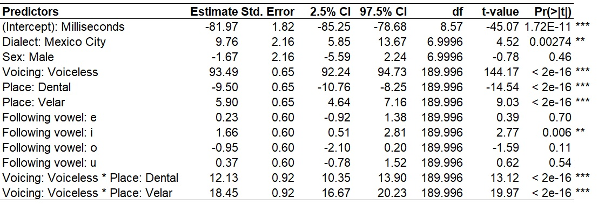
A linear mixed-effects regression was fitted with VOT as the dependent variable, with dialect, sex, voicing, place of articulation, and following vowel as fixed effects and a Voicing x Place interaction. Random intercepts were included for speaker and word. The interaction model provided a substantially better fit than the additive model, \(\chi^2(2)=229.87\), \(p<.001\), and also produced substantially lower AIC and BIC values.
Mexico City speakers had significantly longer VOTs than Madrid speakers (\(\beta=9.76\), SE = 2.16, \(p=.003\)). As expected, voiceless bilabial stops had substantially longer VOTs than voiced bilabial stops (\(\beta=93.49\), SE = 0.65, \(p<.001\)). Among voiced stops, dental stops had shorter VOTs than bilabial stops (\(\beta=-9.50\), SE = 0.65, \(p<.001\)), while velar stops had longer VOTs than bilabial stops (\(\beta=5.90\), SE = 0.65, \(p<.001\)).
Importantly, there was a significant interaction between voicing and place of articulation. The interaction coefficients were significant for both dental (\(\beta=12.13\), SE = 0.92, \(p<.001\)) and velar stops (\(\beta=18.45\), SE = 0.92, \(p<.001\)), demonstrating that the effect of
placediffered between voiced and voiceless stops. Among voiceless stops, the model predicted VOTs approximately 2.63 ms longer for dental than bilabial stops and 24.35 ms longer for velar than bilabial stops. The resulting pattern was therefore bilabial < dental < velar, consistent with the expected longer VOTs associated particularly with velar stops.Following vowel also had a small effect. Stops preceding /i/ had VOTs approximately 1.66 ms longer than those preceding /a/ (\(\beta=1.66\), SE = 0.60, \(p=.006\)), while the remaining vowel contrasts were not significant. Sex did not significantly affect VOT (\(\beta=-1.67\), SE = 2.16, \(p=.464\)).
The important point is that a Results section should describe the linguistic pattern represented by the model, rather than simply reproduce the coefficient table in sentence form.